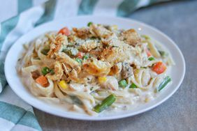

Chicken Alfredo

Description
Creamy and comforting, Chicken Alfredo is a classic pasta dish featuring tender chicken breasts, fettuccine, and a rich, cheesy Alfredo sauce made with butter, cream, and Parmesan. Perfect for a weeknight dinner or a cozy meal.
Ingredients
- 2 boneless, skinless chicken breasts
- Salt and pepper, to taste
- 2 tablespoons olive oil
- 12 ounces fettuccine
- 4 tablespoons butter
- 3 cloves garlic, minced
- 1 1/2 cups heavy cream
- 1 cup grated Parmesan cheese
- 1/4 teaspoon ground nutmeg (optional)
- Chopped parsley, for garnish
Steps
- Season chicken breasts with salt and pepper. In a skillet over medium heat, cook in olive oil until golden and cooked through. Let rest, then slice.
- Cook fettuccine in salted boiling water until al dente. Drain and set aside.
- In a large skillet, melt butter and sauté garlic until fragrant (about 1 minute).
- Add heavy cream and bring to a simmer. Stir in Parmesan cheese and nutmeg if using. Simmer until sauce thickens slightly.
- Add cooked pasta to the sauce and toss to coat evenly. Add sliced chicken on top.
- Garnish with chopped parsley and serve hot.
Home